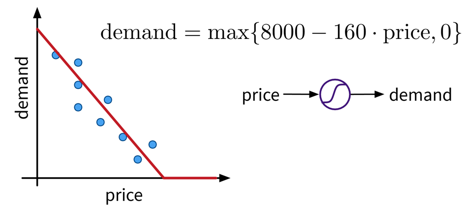
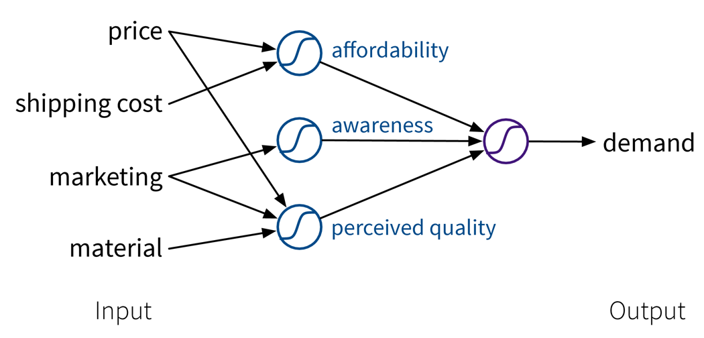
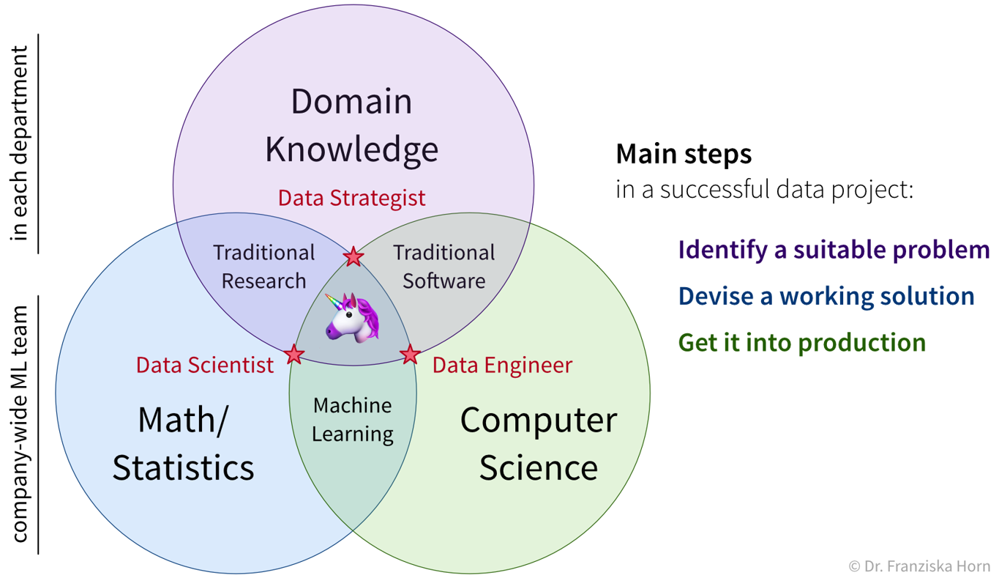

Why read this book?
There are a lot of machine learning (ML) resources out there. Many of them either targeted at students or researchers and rather heavy on the mathematical theory, or others in the form of tutorials, focusing on the concrete implementation and application of some ML algorithm to a specific problem. This book tries to find a middle ground between both the theoretical background, which I have studied in depth while completing my PhD in machine learning at the TU Berlin, Germany, and the practical applications of these algorithms to solve different problems, as I have been doing in the last few years as an independent data science consultant for various firms. This book originated from my experience holding dozens of machine learning seminars and workshops in front of audiences with varying levels of technical and mathematical background.

Questions this book answers:
-
Which problems can machine learning (ML) solve?
-
How does ML solve these problems, i.e., how do the algorithms work (in theory)?
-
How do you actually get this to work in practice and avoid common pitfalls?
This book does not explain the latest fancy neural network model that achieves state-of-the-art performance on some specific task. Instead it provides a general intuition for the ideas behind different machine learning algorithms to establish a solid framework that helps you better understand and integrate into a bigger picture what you later read about these specific approaches.
This book and the associated courses exist in two versions:
The condensed version is written for all audiences, i.e., readers generally interested in ML, who want to understand what is behind the hype and where ML can — or should not — be used. The full version is mainly written for ML practitioners and assumes the reader is familiar with elementary concepts of linear algebra (see also this overview on the mathematical notation used in the book).
This is still a draft version! Please write me an email or fill out the feedback survey, if you have any suggestions for how this book could be improved!
Enjoy! :-)
- Acknowledgments
-
I would like to thank: Antje Relitz for her feedback & contributions to the original workshop materials, Robin Horn for his feedback & help with the German translation of the book, and Karin Zink for her help with some of the graphics (incl. the book cover).
- How to cite
@misc{horn2021mlpractitioner,
author = {Horn, Franziska},
title = {A Practitioner's Guide to Machine Learning},
year = {2021},
url = {https://franziskahorn.de/mlbook/},
}
Introduction
This chapter provides some motivating examples illustrating the rise of machine learning (ML).
ML is everywhere!
Machine learning is already used all around us to make our lives more convenient:
Face recognition
Face recognition technology is one of the earliest notable examples of machine learning and computer vision that can nowadays be found in every digital camera and smartphone.
While the algorithms implemented in a camera application are fairly simple and only detect the presence of faces in general to make sure you look your best when the picture is taken, more sophisticated algorithms are also being used by governments and law enforcement in more and more countries to match a detected face to a known person in their biometric databases, for example, to identify criminals. So…smile!?

Object recognition (e.g., for self-driving cars)
Another example from the area of computer vision is object recognition or image segmentation in general. This is, for example, used in self-driving cars to make sure they are aware of street signs and pedestrians.

Analysis of medical images
The last example on image data comes from the application area of medicine: Below you see two images of retinas, i.e., photos taken of the back of someone’s eye, based on which it is possible to diagnose a common complication of diabetes that can result in blindness if left untreated.
The diagnostic algorithm to identify the markers of the disease in these images was developed by researchers at Google and achieves the same level of accuracy as human experts in the field. Google had even assembled a team of top specialists to discuss the hardest cases again to get consistent labels for all images, which gave their model an additional performance boost.
Since the equipment to take these images is fairly cheap, this means that with this ML model, expert diagnostic decisions can now be made available to those that might otherwise not have had the means to consult a top specialist.

Conversational agents (i.e., speech recognition…)
Leaving the field of computer vision, now an example from the area of natural language processing (NLP): Conversational agents, like Siri or Alexa, are waiting for commands in many people’s homes. While many of the answers they give are still scripted by humans (as in the screenshot below), the real challenge is to understand what the person had actually said in the first place. Speech recognition, i.e., automatically transcribing spoken language into text, is a rather difficult problem, for example, since people speak with different accents and there can be additional background noises.

Machine translation
Again from the field of NLP: machine translation, i.e., automatically translating text from one language into another.
If you have used Google Translate (shown as an example in the screenshot below) after it was first released in 2006, you were probably often quite disappointed with the results, as the translated sentences read more like the words were just looked up one after another in a dictionary (= statistical machine translation). However, this changed when Google made the switch to a neural network model to generate the translations 10 years later in 2016: now the translated texts are actually readable and usually require only minor manual corrections, if any.

Recommender systems
Another application area are recommender systems, for example, on e-commerce platforms (like Amazon in the screenshot below) to provide the user with helpful search results and suggestions, and thereby generate revenue for the respective companies. They are also used on social media platforms and by Netflix, YouTube & co to keep you glued to your screen.
Sometimes the provided suggestions might help you find exactly what you were looking for. But especially platforms with uncurated content such as YouTube have also been criticized for fostering, e.g., conspiracy theories through these personalized recommendations. Since this kind of content kept users especially engaged, it was recommended a lot and thereby drove the users further down some rabbit hole instead of also providing perspectives outside one’s own information bubble.
But on the upside, the research on recommender systems has also sparked developments in other areas of science, such as methods that recommend drug molecules that fit to the proteins playing a key role in certain diseases to accelerate the search for a cure.


Neural networks getting creative
Lots of fun applications use neural networks to create new content, i.e., perform creative tasks that were previously thought exclusive to humans.
For example, an AI has written a slightly confusing yet hilarious script for a movie, which was then actually produced.
Neural networks are also used to visualize music by combining and transforming images, like in the video below:
And you’ve probably also seen some examples of “Neural Style Transfer” before, a technique that can, for example, be used to make your social media profile picture look like a van Gogh painting:

Even stock photos are now basically obsolete, since we can use neural networks to generate images given a textual description:
And chatbots can hold conversations and provide information in a variety of styles:

ML history: Why now?
Why is there such a rise in ML applications? Not only in our everyday lives has ML become omnipresent, but also the number of research paper published each year has increased exponentially:

Interestingly, this is not due to an abundance of groundbreaking theoretical accomplishments in the last few years (indicated as purple diamonds in the plot), but rather many of the algorithms used today were actually developed as far back as the late 50s / early 60s. For example, the perceptron is a precursor of neural networks, which are behind all the examples shown in the last section. Indeed, the most important neural network architectures, recurrent neural networks (RNN) and convolutional neural networks (CNN), which provide the foundation for state-of-the-art language and image processing respectively, were developed in the early 80s and 90s. But back then we lacked the computational resources to use them on anything more than small toy datasets.
This is why the rise in ML publications correlates more closely with the number of transistors on CPUs (i.e., the regular processors in normal computers) and GPUs (graphics cards, which parallelize the kinds of computations needed to train neural network models efficiently):

Additionally, the release of many open source libraries, such as scikit-learn (for traditional ML models) and theano, tensorflow, and (py)torch (for the implementation of neural networks), has further facilitated the use of ML algorithms in many different fields.
| While these libraries democratize the use of ML, unfortunately, this also brings with it the downside that ML is now often applied without a sound understanding of the theoretical underpinnings of these algorithms or their assumptions about the data. This can result in models that don’t show the expected performance and subsequently some (misplaced) disappointment in ML. In the worst case, it can lead to models that discriminate against certain parts of the population, e.g., credit scoring algorithms used by banks that systematically give women loans at higher interest rates than men due to biases encoded in the historical data used to train the models. We’ll discuss these kinds of issues in the chapter on avoiding common pitfalls. |
Another factor driving the spread of ML is the availability of (digital) data. Companies like Google, Amazon, and Meta have had a head start here, as their business model was built around data from the start, but other companies are starting to catch up. While traditional ML models do not benefit much from all this available data, large neural network models with many degrees of freedom can now show their full potential by learning from all the texts and images posted every day on the Internet:

But we’re still far from Artificial General Intelligence (AGI)!

An AGI is a hypothetical computer system with human-like cognitive abilities capable of understanding, learning, and performing a wide range of tasks across diverse domains. Specifically, an AGI would not only perform specific tasks but also understand and learn from its environment, make decisions autonomously, and generalize its knowledge to completely new situations.
Instead, what is used in practice today is Artificial Narrow Intelligence (ANI): models explicitly programmed to solve a specific task(s), e.g., translate texts from one language to another. But they can’t generalize (on their own) to handle novel tasks, i.e., a machine translation model will not tomorrow decide that it now also wants to recognize faces in images. Of course, one can combine several individual ANIs into one big program trained to solve multiple different tasks, but this collection of ANIs is still not able to learn (on its own) any new skills beyond these capabilities.
Many AI researchers believe that at least with the currently used approaches to AI (e.g., large language models (LLMs) like ChatGPT from OpenAI), we might never produce a true human-like AGI. Specifically, these AI systems still lack a general understanding of causality and physical laws like object permanence — something that even many pets understand.
If you’re interested to learn more about the faults of current AI systems, the blog articles by Gary Marcus are highly recommended!
The Basics
This chapter provides a general introduction into what machine learning (ML) actually is and where it can — or should not — be used.
Data is the new oil!?
Let’s take a step back. Because it all begins with data.
You’ve probably heard this claim before: “Data is the new oil!”. This suggests that data is valuable. But is it?
The reason why oil is considered valuable is because we have important use cases for it: powering our cars, heating our homes, and producing plastics or fertilizers.
Similarly, our data is only as valuable as what we make of it. So what can we use data for?
The main use cases belong to one of two categories:

Insights
We can generate insights either through continuous monitoring (“Are we on track?”) or a deeper analysis (“What’s wrong?”).
By visualizing important variables or Key Performance Indicators (KPIs) in reports or dashboards, we increase transparency of the status quo and quantify our progress towards some goal. When a KPI is far from its target value, we can dig deeper into the data with an exploratory data analysis to identify the root cause of the problem and answer questions such as
-
Why are we not reaching our goal?
-
What should we do next?
However, as we’ll discuss in more detail in the section on data analysis, arriving at satisfactory answers is often more art than science .
Automation
As described in the following sections, machine learning models can be used to automate ‘input → output’ tasks otherwise requiring a human (expert). These tasks are usually easy for an (appropriately trained) human, for example:
-
Translating texts from one language into another
-
Sorting out products with scratches when they pass a checkpoint on the assembly line
-
Recommending movies to a friend
For this to work, the ML models need to be trained on a lot of historical data (e.g., texts in both languages, images of products with and without scratches, information about different users and which movies they watched).
The resulting software can then either be used to automate the task completely or we can keep a human in the loop that can intervene and correct the suggestions made by the model.
What is ML?
OK, now what exactly is this machine learning that is already transforming all of our lives?
First of all, ML is an area of research in the field of theoretical computer science, i.e., at the intersection of mathematics and computer science:

More specifically, machine learning is an umbrella term for algorithms that recognize patterns and learn rules from data.
| Simply speaking, an algorithm can be thought of as a strategy or recipe for solving a certain kind of problem. For example, there exist effective algorithms to find the shortest paths between two cities (e.g., used in Google Maps to give directions) or to solve scheduling problems, such as: “Which task should be done first and which task after that to finish all tasks before their respective deadlines and satisfy dependencies between the tasks.” Machine learning deals with the subset of algorithms that detect and make use of statistical regularities in a dataset to obtain specific results. |
Analogous to the tools used in a traditional manufacturing process to build something, you can think of ML algorithms as tools to generate value from data:

In order to successfully apply ML, you should ask yourself some important questions:
-
What could be valuable? For example, this could be a new feature for an existing product, like Face ID as a new way to unlock your phone.
-
What raw inputs are needed? We can’t build a wooden chair using only fabric and metal or a few twigs we found in the woods. Similarly, depending on what we want to achieve with ML, we also need the right data (quality & quantity) to apply the algorithms in the first place. This can be especially tricky since in most cases we can’t just buy the data we need like wood at a hardware store, but we have to collect it ourselves, i.e., grow our own trees, which can take some time.
-
Which ML algorithm is the right tool for the task? (I.e., which category of ML algorithms produces the type of output we want?)
-
Do I or my employees have the necessary skills and enough compute power to accomplish this in practice?
We can think of the different ML algorithms as our ML toolbox:

- ML algorithms solve “input → output” problems
-
What all of these ML algorithms have in common, is that they solve “input → output” problems like these:
In the above examples, while a human (expert) could easily produce the correct output given the input (e.g., even a small child can recognize the cat in the first image), humans have a hard time describing how they arrived at the correct answer (e.g., how did you know that this is a cat (and not a small dog)? because of the pointy ears? the whiskers?). ML algorithms can learn such rules from the given data samples.
ML vs. traditional software
While traditional software solutions are used to automate tasks that can be formulated as a fixed, predefined sequence of actions, executed according to some hard-coded rules (e.g., “a gate should open if an object passes through a photoelectric barrier and 20 seconds later the gate should close again”), machine learning can be used to automate “input → output” tasks for which it would otherwise be difficult to come up with such rules.
For example, the quality control in a cookie factory is such an “input (cookie) → output (ok/defective)” task: While some broken cookies could be sorted out automatically by checking that each cookie weights around 15g, it would be difficult to formulate rules that reliably catch all possible defects. So either a human could watch the production line to additionally recognize, e.g., over-baked cookies, or one could take pictures of the cookies and use them as input for a machine learning model to recognize the defective cookies:

To solve this problem with ML, first a large dataset needs to be compiled with photos of many good, but also all kinds of defective cookies, including the corresponding annotations, i.e., a label for each picture whether it displays a good or defective cookie (not necessarily specifying the kind of defect). An ML algorithm can then learn to distinguish between good and defective cookies from these examples.
- Steps to identify a potential ML project
-
-
Create a process map: which steps are executed in the business process (flow of materials & information) and what data is collected where. For example, in a production process where some of the produced parts are defective:

-
Identify parts of the process that could either be automated with ML (e.g., straightforward, repetitive tasks otherwise done by humans) or in other ways improved by analyzing data (e.g., to understand root causes of a problem, to improve planning with what-if simulations, or to optimize the use of resources):
 The first idea is to automate the quality check that was so far done by a human: since the human can easily recognize the defects in the pictures taken of the products, an ML model should be able to do this, too. The next idea is to try to predict in advance whether a product will be faulty or not based on the composition of raw materials and the proposed process conditions: success here is unclear, since the human experts are not sure whether all of the information necessary to determine if the product will be fine is contained in this data — but nevertheless it’s worth a try since this could save lots of resources. While the final ML model that solves the input-output problem can be deployed as software in the ongoing process, when a data scientist analyzes the results and interprets the model, she can additionally generate insights that can be translated into action recommendations.
The first idea is to automate the quality check that was so far done by a human: since the human can easily recognize the defects in the pictures taken of the products, an ML model should be able to do this, too. The next idea is to try to predict in advance whether a product will be faulty or not based on the composition of raw materials and the proposed process conditions: success here is unclear, since the human experts are not sure whether all of the information necessary to determine if the product will be fine is contained in this data — but nevertheless it’s worth a try since this could save lots of resources. While the final ML model that solves the input-output problem can be deployed as software in the ongoing process, when a data scientist analyzes the results and interprets the model, she can additionally generate insights that can be translated into action recommendations. -
Prioritize: which project will have a high impact, but at the same time also a good chance of success, i.e., should yield a high return on investment (ROI)? For example, using ML to automate a simple task is a comparatively low risk investment, but might cause some assembly-line workers to loose their jobs. In contrast, identifying the root causes of why a production process results in 10% scrap could save millions, but it is not clear from the start that such an analysis will yield useful results, since the collected data on the process conditions might not contain all the needed information.
-
How do machines “learn”?
How do ML algorithms solve these “input → output” problems, i.e., how do they recognize patterns and learn rules from data?
The set of ML algorithms can be subdivided according to their learning strategy. This is inspired by how humans learn:

Analogously, machines can also learn by following these three strategies:

- Data requirements for learning according to these strategies:
-
-
Unsupervised Learning: a dataset with examples

-
Supervised Learning: a dataset with labeled examples

-
Reinforcement Learning: a (simulation) environment that generates data (i.e., reward + new state) in response to the agent’s actions

With its reliance on a data-generating environment, reinforcement learning is a bit of a special case. Furthermore, as of now it’s still really hard to get reinforcement learning algorithms to work correctly, which means they’re currently mostly used in research and not so much for practical applications.
-
Supervised Learning
Supervised learning is the most common type of machine learning used in today’s applications.
The goal here is to learn a model (= a mathematical function) \(f(x)\) that describes the relationship between some input(s) \(x\) (e.g., different process conditions like temperature, type of material, etc.) and output \(y\) (e.g., resulting product quality).
This model can then be used to make predictions for new data points, i.e., compute \(f(x') = y'\) for some new \(x'\) (e.g., predict for a new set of process conditions whether the produced product will be of high quality or if the process should be stopped to not waste resources).
- Supervised Learning in a nutshell:
-
 Before we start, we need to be very clear on what we want, i.e., what should be predicted, how will predicting this variable help us achieve our overall goals and create value, and how do we measure success, i.e., what is the Key Performance Indicator (KPI) of our process. Then, we need to collect data — and since we’re using supervised learning, this needs to be labeled data, with the labels corresponding to the target variable that we want to predict. Next, we “learn” (or “train” or “fit”) a model on this data and finally use it to generate predictions for new data points.
Before we start, we need to be very clear on what we want, i.e., what should be predicted, how will predicting this variable help us achieve our overall goals and create value, and how do we measure success, i.e., what is the Key Performance Indicator (KPI) of our process. Then, we need to collect data — and since we’re using supervised learning, this needs to be labeled data, with the labels corresponding to the target variable that we want to predict. Next, we “learn” (or “train” or “fit”) a model on this data and finally use it to generate predictions for new data points.
Features & Labels
A production process, where we want to predict whether a produced part is scrap given certain production conditions, is an example of a typical supervised learning problem. Here, the collected data for each produced part includes the process conditions under which it was produced, as well as the outcome, i.e., whether the product was okay or scrap:


In the supervised learning setup, the features are used as the input to the model, while the labels constitute the target variable, i.e., the predicted output. Generally, features should be independent variables (e.g., settings that the operator can choose as he wishes), while the target value should be dependent on these inputs — otherwise we can’t predict it from these inputs alone.
“Learning” a model from the data
Goal: Describe the relationship between input(s) \(x\) and output \(y\) with a model, i.e., a mathematical function \(f(x)\)

-
Select a model class (= structure of the function): Assumption: relationship is linear
→ linear regression model: \(y = f(x) = b + w\cdot x\) -
Define an objective: Minimize error between true & predicted \(y\):
→ \(\min_{b,w} \sum_i (y_i - f(x_i))^2\) -
Find best model parameters given the data: i.e., solve the optimization problem defined in step 2
⇒ \(f(x) = -2.7 + 5.2x\)
| Video Recommendation: If you’re not familiar with linear regression, the most basic supervised learning algorithm, please watch the explanation from Google decision scientist Cassie Kozyrkov on how linear regression works: [Part 1] [Part 2] [Part 3] |
The available supervised learning algorithms differ in the type of \(x \to y\) relationship they can describe (e.g., linear or nonlinear) and what kind of objective they minimize (also called loss function; an error computed on the training data, quantifying the mismatch between true and predicted labels). The task of a data scientist is to select a type of model that can optimally fit the given data. The rest is then taken care of by an optimization method, which finds the parameters of the model that minimize the model’s objective, i.e., such that the model’s prediction error on the given data is as small as possible.
| In most of the book, the terms “ML algorithm” and “ML model” will be used interchangeably. To be more precise, however, in general the algorithm processes the data and learns some parameter values. These parameter settings define the final model. For example, a linear regression model is defined by its coefficients (i.e., the model’s parameters), which are found by executing the steps outlined in the linear regression algorithm, which includes solving an optimization problem. |
Don’t stop there!

- Predictive Analytics
-
By feeding historical data to a supervised learning algorithm, we can generate a predictive model that makes predictions about future scenarios to aid with planning.
Example: Use sales forecasts to better plan inventory levels. - Interpreting Predictive Models
-
Given a model that makes accurate predictions for new data points, we can interpret this model and explain its predictions to understand root causes in a process.
Example: Given a model that predicts the quality of a product from the process conditions, identify which conditions result in lower quality products. - What-if Analysis & Optimization
-
Given a model that makes accurate predictions for new data points, we can use this model in a “what-if” forecast to explore how a system might react to different conditions to make better decisions (use with caution!).
Example: Given a model that predicts the remaining lifetime of a machine component under some process conditions, simulate how quickly this component would deteriorate if we changed the process conditions.Going one step further, this model can also be used inside an optimization loop to automatically evaluate different inputs with the model systematically to find optimal settings.
Example: Given a model that predicts the quality of a product from the process conditions, automatically determine the best production settings for a new type of raw material.
ML use cases
The inputs that the ML algorithms operate on can come in many forms…
- Structured vs. unstructured data
-
Data can come in various forms and while some data types require additional preprocessing steps, in principle ML algorithms can be used with all kinds of data.
 The main distinction when characterizing data is made between structured data, which is any dataset that contains individual measurements / variables / attributes / features that represent unique quantities, and unstructured data, which can not be subdivided into meaningful variables. For example, in images “first pixel from the left” or in texts “10th word in the second paragraph” is not what we would call a variable, while “size in square meters” and “number of bedrooms” are useful quantities to describe an apartment. Structured data is often heterogeneous, since the different variables in a dataset typically stand for very different things. For example, when working with sensor data, a dataset normally does not consist of only temperature measurements, but additionally it could contain, e.g., pressure and flow values, which have different units and measurement scales. Unstructured data, on the other hand, is homogeneous, e.g., there is no qualitative difference between the 10th and the 100th pixel in an image.
The main distinction when characterizing data is made between structured data, which is any dataset that contains individual measurements / variables / attributes / features that represent unique quantities, and unstructured data, which can not be subdivided into meaningful variables. For example, in images “first pixel from the left” or in texts “10th word in the second paragraph” is not what we would call a variable, while “size in square meters” and “number of bedrooms” are useful quantities to describe an apartment. Structured data is often heterogeneous, since the different variables in a dataset typically stand for very different things. For example, when working with sensor data, a dataset normally does not consist of only temperature measurements, but additionally it could contain, e.g., pressure and flow values, which have different units and measurement scales. Unstructured data, on the other hand, is homogeneous, e.g., there is no qualitative difference between the 10th and the 100th pixel in an image.
…but our goal, i.e., the desired outputs, determines the type of algorithm we should use for the task:

Some example input → output tasks and what type of ML algorithm solves them:
| Input \(X\) | Output \(Y\) | ML Algorithm Category |
|---|---|---|
questionnaire answers |
customer segmentation |
clustering |
sensor measurements |
everything normal? |
anomaly detection |
past usage of a machine |
remaining lifetime |
regression |
spam (yes/no) |
classification (binary) |
|
image |
which animal? |
classification (multi-class) |
user’s purchases |
products to show |
recommender systems |
search query |
relevant documents |
information retrieval |
audio |
text |
speech recognition |
text in English |
text in French |
machine translation |
To summarize (see also: overview table as PDF):
- Existing ML solutions & corresponding output (for one data point):
-
-
Dimensionality Reduction: (usually) 2D coordinates (to create a visualization of the dataset)
-
Outlier/Anomaly Detection: anomaly score (usually a value between 0 and 1 indicating how likely it is that this point is an outlier)
-
Clustering: cluster index (a number between 0 and k-1 indicating to which of the k clusters a data point belongs (or -1 for outliers))
-
Regression: a continuous value (any kind of numeric quantity that should be predicted)
-
Classification: a discrete value (one of several mutually exclusive categories)
-
Generative AI: unstructured output like a text or image (e.g., speech recognition, machine translation, image generation, or neural style transfer)
-
Recommender Systems & Information Retrieval: ranking of a set of items (recommender systems, for example, rank the products that a specific user might be most interested in; information retrieval systems rank other items based on their similarity to a given query item)
-
Reinforcement Learning: a sequence of actions (specific to the state the agent is in)
-
Let’s start with a more detailed look at the different unsupervised & supervised learning algorithms and what they are good for:

| Even if our ultimate goal is to predict something (i.e., use supervised learning), it can still be helpful to first use unsupervised learning to get a better understanding of the dataset, for example, by visualizing the data with dimensionality reduction methods to see all samples and their diversity at a glance, by identifying outliers to clean the dataset, or, for classification problems, by first clustering the samples to check whether the given class labels match the naturally occurring groups in the data or if, e.g., two very similar classes could be combined to simplify the problem. |
Dimensionality Reduction
-
create a 2D visualization to explore the dataset as a whole, where we can often already visually identify patterns like samples that can be grouped together (clusters) or that don’t belong (outliers)
-
noise reduction and/or feature engineering as a data preprocessing step to improve the performance in the following prediction task
- Example Unsupervised Learning: Dimensionality Reduction
-
Goal: Visualize the dataset

-
transforming the data with dimensionality reduction methods constructs new features as a (non)linear combination of the original features, which decreases the interpretability of the subsequent analysis results
Anomaly Detection
-
clean up the data, e.g., by removing samples with wrongly entered values, as a data preprocessing step to improve the performance in the following prediction task
-
create alerts for anomalies, for example:
-
fraud detection: identify fraudulent credit card transaction in e-commerce
-
monitor a machine to see when something out of the ordinary happens or the machine might require maintenance
-
- Example Unsupervised Learning: Anomaly Detection
-
Goal: Find outliers in the dataset

-
you should always have a good reason for throwing away data points — outliers are seldom random, sometimes they reveal interesting edge cases that should not be ignored
Clustering
-
identify groups of related data points, for example:
-
customer segmentation for targeted marketing campaign
-
- Example Unsupervised Learning: Clustering
-
Goal: Find naturally occurring groups in the dataset

-
no ground truth: difficult to choose between different models and parameter settings → the algorithms will always find something, but whether this is useful (i.e., what the identified patterns mean) can only be determined by a human in a post-processing step
-
many of the algorithms rely on similarities or distances between data points, and it can be difficult to define an appropriate measure for this or know in advance which features should be compared (e.g., what makes two customers similar?)
Unsupervised learning has no ground truth
It is important to keep in mind that unsupervised learning problems have no right or wrong answers. Unsupervised learning algorithms simply recognize patterns in the data, which may or may not be meaningful for us humans.
For example, there exist a bunch of different unsupervised learning algorithms that group data points into clusters, each with a slightly different strategy and definition of what it means for two samples to be similar enough that they can be put into the same cluster.

It is up to the data scientist to examine the results of an unsupervised learning algorithm and make sense of them. And if they don’t match our expectations, we can simply try a different algorithm.
Regression & Classification
-
Learn a model to describe an input-output relationship and make predictions for new data points, for example:
-
predict in advance whether a product produced under the proposed process conditions will be of high quality or would be a waste of resources
-
churn prediction: identify customers that are about to cancel their contract (or employees that are about to quit) so you can reach out to them and convince them to stay
-
price optimization: determine the optimal price for a product (often used for dynamic pricing, e.g., to adapt prices based on the device a customer uses (e.g., new iPhone vs old Android phone) when accessing a website)
-
predictive maintenance: predict how long a machine component will last
-
sales forecasts: predict revenue in the coming weeks and how much inventory will be required to satisfy the demand
-
- Example Supervised Learning: Classification
-
Goal: Predict a discrete value for each data point

- Example Supervised Learning: Regression
-
Goal: Predict a continuous value for each data point

-
success is uncertain: while it is fairly straightforward to apply the models, it is difficult to determine in advance whether there even exists any relation between the measured inputs and targets (→ beware of garbage in, garbage out!)
-
appropriate definition of the output/target/KPI that should be modeled, i.e., what does it actually mean for a process to run well and how might external factors influence this definition (e.g., can we expect the same performance on an exceptionally hot summer day?)
-
missing important input variables, e.g., if there exist other influencing factors that we haven’t considered or couldn’t measure, which means not all of the target variable’s variance can be explained
-
lots of possibly irrelevant input variables that require careful feature selection to avoid spurious correlations, which would result in incorrect ‘what-if’ forecasts since the true causal relationship between the inputs and outputs isn’t captured
-
often very time intensive data preprocessing necessary, e.g., when combining data from different sources and engineering additional features
Deep Learning & Generative AI
-
automate tedious, repetitive tasks otherwise done by humans, for example (see also ML is everywhere!):
-
text classification (e.g., identify spam / hate speech / fake news; forward customer support request to the appropriate department)
-
sentiment analysis (subtask of text classification: identify if text is positive or negative, e.g., to monitor product reviews or what social media users are saying about your company)
-
speech recognition (e.g., transcribe dictated notes or add subtitles to videos)
-
machine translation (translate texts from one language into another)
-
image classification / object recognition (e.g., identify problematic content (like child pornography) or detect street signs and pedestrians in autonomous driving)
-
image captioning (generate text that describes what’s shown in an image, e.g., to improve the online experience for for people with visual impairment)
-
predictive typing (e.g., suggest possible next words when typing on a smartphone)
-
data generation (e.g., generate new photos/images of specific objects or scenes)
-
style transfer (transform a given image into another style, e.g., make photos look like van Gogh paintings)
-
separate individual sources of an audio signal (e.g., unmix a song, i.e., separate vocals and instruments into individual tracks)
-
-
replace classical simulation models with ML models: since exact simulation models are often slow, the estimation for new samples can be speed up by instead predicting the results with an ML model, for example:
-
AlphaFold: generate 3D protein structure from amino acid sequence (to facilitate drug development)
-
SchNet: predict energy and other properties of molecules given their configuration of atoms (to speed up materials research)
-
-
selecting a suitable neural network architecture & getting it to work properly; especially when replacing traditional simulation models it is often necessary to develop a completely new type of neural network architecture specifically designed for this task and inputs / outputs, which requires a lot of ML & domain knowledge, intuition, and creativity
-
computational resources (don’t train a neural network without a GPU!)
-
data quality and quantity: need a lot of consistently labeled data, i.e., many training instances labeled by human annotators who have to follow the same guidelines (but can be mitigated in some cases by pre-training the network using self-supervised learning)
Information Retrieval
-
improve search results by identifying similar items: given a query, rank results, for example:
-
return matching documents / websites given a search query
-
show similar movies given the movie a user is currently looking at (e.g., same genre, director, etc.)
-
-
quality of results depends heavily on the chosen similarity metric; identifying semantically related items is currently more difficult for some data types (e.g., images) than others (e.g., text)
Recommender Systems
-
personalized suggestions: given a sample from one type of data (e.g., user, protein structure), identify the most relevant samples from another type of data (e.g., movie, drug composition), for example:
-
show a user movies that other users with a similar taste also liked
-
recommend molecule structures that could fit into a protein structure involved in a certain disease
-
-
little / incomplete data, for example, different users might like the same item for different reasons and it is unclear whether, e.g., a user didn’t watch a movie because he’s not interested in it or because he just didn’t notice it yet
Reinforcement Learning
-
Determine an optimal sequence of actions given changing environmental conditions, for example:
-
virtual agent playing a (video) game
-
robot with complex movement patterns, e.g., picking up differently shaped objects from a box
-
⇒ Unlike in regular optimization, where the optimal inputs given a single specific external condition are determined, here an “agent” (= the RL algorithm) tries to learn an optimal sequence of inputs to maximize the cumulative reward received over multiple time steps, where there can be a significant time delay between the inputs and the rewards that they generate (e.g., in a video game we might need to pick up a key in the beginning of a level, but the door that can be opened with it only comes several frames later).
-
usually requires a simulation environment for the agent to learn in before it starts acting in the real world, but developing an accurate simulation model isn’t easy and the agent will exploit any bugs if that results in higher rewards
-
can be tricky to define a clear reward function that should be optimized (imitation learning is often a better option, where the agent instead tries to mimic the decisions made by a human in some situation)
-
difficult to learn correct associations when there are long delays between critical actions and the received rewards
-
agent generates its own data: if it starts off with a bad policy, it will be tricky to escape from this (e.g., in a video game, if the agent always falls down a gap instead of jumping over it, it never sees the rewards that await on the other side and therefore can’t learn that it would be beneficial to jump over the gap)
Other
| ML algorithms are categorized by the output they generate for each input. If you want to solve an ‘input → output’ problem with a different output than the ones listed above, you’ll likely have to settle in for a multi-year research project — if the problem can be solved with ML at all! |
Solving problems with ML
Solving “input → output” problems with ML requires three main steps:

1. Identify a suitable problem
The first (and arguably most important) step is to identify where machine learning can (and should) be used in the first place.
ML project checklist
Motivation
-
What problem do you want to solve?
Machine learning can help you in various ways by generating insights from large amounts of (possibly unstructured) data, improving decision making and planning processes by providing predictions about future events, or automating tedious tasks otherwise requiring human experts.
Where do you see a lot of inefficiencies around you that could be mitigated by a better use of data? For example, you could look for opportunities to decrease wasted resources / time / costs or increase revenue / customer satisfaction / etc.
To systematically identify problems or opportunities, it can be helpful to create a process map or customer journey map. -
In what way(s) would this generate value for your organization?
How could your organization make money on this or reduce costs?-
Could this improve an internal process (e.g., maybe a process can be run more efficiently with the insights from an analysis or a tedious task that would otherwise require a human worker can be automated using an ML model)?
-
Could the ML model be integrated as a new feature within an existing product and thereby, e.g., make this product more appealing to customers?
-
Could the ML solution be sold as an entirely new product or service, e.g., offered as a Software-as-a-Service (SaaS) solution?
Please note that how the ML solution will be used in the end might also be a strategic decision that can be different for every organization. For example, an ML solution that recognizes scratches in produced products might be used by one company to improve their internal production process, while another company that produces the machines that make the products could integrate this as a new feature in their machines, and a third company might offer this as a SaaS solution compatible with different production lines.
-
-
How much value could this project generate?
Think of the impact in terms of-
Magnitude: Small improvement or revolution? Will the solution result in a strategic advantage?
-
Scale: How often will this be used? How many users/customers/employees will benefit?
For example:
-
Small process optimization, but since this process is used everyday in the whole organization it saves countless hours
-
New feature that revolutionizes the product and sets you apart from the competition, but the market for it is tiny
-
-
Would this have any valuable side effects? What will be different? Any additional opportunities that could arise from this? Can you create synergies between departments that work with similar data?
-
-
How do you know you’ve accomplished your goal?
What would success look like, i.e., what’s your definition of ‘done’?-
Can you quantify the progress towards your goal with a KPI?
-
What is the status quo, i.e., how far are you from your goal right now? What is your target?
-
Which metrics should not change (i.e., get worse) due to this project?
-
Solution Outline
-
What is your vision for the future with ML?
-
What does your existing process / system look like and how will it be different after you integrate the ML solution?
-
Who are the users and how will they be affected by this change, e.g., will they require additional training to use the new system?
-
-
What are the deliverables?
Does the solution consist of a piece of software that is deployed somewhere to continuously make predictions for new data points, or are you more interested in the insights gained from an one-off analysis of historical data? -
In case of a software solution, how will the ML model be integrated with the existing setup?
-
What does one interaction with the system look like (= 1 data point / sample / observation), e.g., a user making a request or a produced product passing a quality checkpoint?
-
Where are the inputs for the ML model coming from? What happens to the outputs of the ML model?
-
Do you need an additional user interface (UI) or API to interact with the ML model?
-
Does the ML model need to make predictions instantly as new data comes in or can it process data asynchronously in batches? What is the expected traffic (i.e., number of data points that need to be processed per second)?
-
How should the ML model be deployed (e.g., cloud, on-premise, or edge device)? Does this require any additional infrastructure or special hardware (e.g., GPUs)?
-
Model maintenance: What are the plans w.r.t. pipelines for future data collection, model monitoring, and automated retraining?
-
-
What is the input data? What should the outputs look like?
-
What kind of inputs does the ML model receive (e.g., image / text / sensor measurements / etc.)?
-
What kind of outputs should the ML model produce, i.e., which category of ML algorithms solves this kind of problem?
-
Do you already have access to an initial dataset to train the model?
-
-
How will you evaluate the performance of the ML model?
-
What evaluation metric is appropriate for the type of ML use case (e.g., accuracy)?
-
How does this evaluation metric relate to the business KPI this solution is supposed to improve?
-
How can the performance of the model be monitored during operation? Is new labeled data continuously collected for this purpose?
-
-
Is there a simpler solution, i.e., without using ML?
Use ML to learn unknown, complex rules from data.-
Even if ML is the right choice here, could you build a minimal viable product without ML to already validate the solution as a whole before investing in ML?
-
Challenges & Risks
-
Is there enough high-quality data available to train and evaluate the model?
-
Quality: Do you have the right inputs and unambiguous labels?
→ Ask a subject matter expert whether she thinks all the relevant input data is available to compute the desired output. This is usually easy to determine for unstructured data such as images — if a human can see the object in the image, ML should too. But for structured data, such as a spreadsheet with hundreds of columns of sensor measurements, this might be impossible to tell before doing any analysis on the data. -
Quantity: How much data was already collected (including rare events and labels)? How long would it take to collect more data? Could additional data be bought from a vendor and if yes, how much would this cost?
-
How difficult is it to get access to all of the data and combine it neatly in one place? Who would you talk to, to set up / improve the data infrastructure?
-
How much preprocessing is necessary (e.g., outlier removal, fixing missing values, feature engineering, i.e., computing new variables from the existing measurements, etc.)? What should be the next steps to systematically improve data quality and quantity and decrease preprocessing requirements in the future?
-
-
Can the problem be solved with an existing ML algorithm?
Ask an ML expert whether a similar problem has already been solved before.-
For known solutions: How complex is it to get the model working (e.g., linear regression vs. deep neural network)?
-
For unknown solutions: Instead of spending years on research to come up with a novel algorithm, is it possible to break the input-output problem down into simpler subproblems with known solutions?
-
-
What would be the worst case scenario when the model is wrong?
Your ML system (like humans) will make mistakes. Do not use ML if you always need 100% correct results!-
What level of performance do you need at least for the ML solution to be valuable? E.g., what false positive or false negative rates are you willing to tolerate? Is the desired performance realistic with the given data? What would be the worst case scenario when the model produces wrong predictions and how much risk are you willing to take?
-
What is the chance of the input data changing over time, e.g., because of changing user demographics or black swan events like a pandemic (e.g., COVID-19)? How often would you need to retrain the model to compensate for these drifts and do you collect new (labeled) data quickly enough to do this?
-
Do users have an incentive to intentionally deceive the system (e.g., spammers who come up with more sophisticated messages if their original ones are caught by the spam filter; adversarial attacks)?
-
Instead of going all in with ML from day 1, is there a way your system can be monitored in the beginning while still providing added value (i.e., human-in-the-loop solution)?
-
-
Are there any potential legal issues or ethical concerns?
-
Is the use of ML prohibited for this kind of application by some regulation, e.g., the EU AI Act?
-
Are there any concerns w.r.t. data privacy, e.g., because you are relying on personally identifiable information (PII)?
-
Do the decisions of the ML model need to be transparent and explainable, e.g., if someone is denied credit because of an algorithmically generated credit score?
-
Is there a risk of model discrimination, e.g., because the model is potentially trained on systematically biased data?
-
-
What else could go wrong?
-
Why might users get frustrated with the solution? For example, when might they prefer to interact with a real human instead of a chatbot?
-

Build or Buy?
-
Core vs. generic domain: Does this create a strategic advantage?
Will the solution be a key part of your business, e.g., a new feature that makes your product more attractive, and/or does it require unique subject matter expertise only available at your organization, e.g., because you’re analyzing data generated by your own specific processes/machines? Or is this a common (but complex) problem, for which a solution already exists (e.g., offered as a Software-as-a-Service (SaaS) product), that you could buy off the shelf?
For example, extracting the relevant information from scanned invoices to automate bookkeeping processes is a relatively complex task for which many good solutions already exist, so unless you are working in a company building bookkeeping software and plan to sell a better alternative to these existing solutions, it probably doesn’t make sense to implement this yourself. -
Do you have the required technical and domain know-how to build this yourself?
-
How difficult would it be to implement the ML solution yourself? For example, what kind of open source libraries already exist that could be used to solve such a task?
-
Do you have the necessary ML talent? If not, you could also consider a hybrid approach where you partner with an academic institution or external consultants.
-
-
What is the return on investment (ROI) for an off-the-shelf solution?
-
How reliable is the off-the-shelf ML solution? Are there any benchmarks available and/or can you test it with some common examples and edge cases yourself?
-
How much effort would be required in terms of preprocessing your data before you could use the off-the-shelf ML solution?
-
How difficult would it be to integrate the output from the off-the-shelf ML solution into your general workflow? Does it do exactly what you need or would additional post-processing steps be required?
-
Can the off-the-shelf ML solution be deployed in-house or does it run on an external server and would this bring with it any data privacy issues?
-
How high are the on-going licensing fees and what is included in terms of maintenance (e.g., how frequently are the models retrained)?
Unless the ML solution will be an integral part of your business, in the end it will probably come down to comparing costs for developing, implementing, running, and maintaining the system yourself vs. costs for integrating the off-the-shelf solution into your existing workflow (incl. necessary data preprocessing) and on-going licensing fees.
-
For more details check out this blog article.
2. Devise a working solution
Once a suitable “input → output” problem as been identified, historical data needs to be gathered and the right ML algorithm needs to be selected and applied to obtain a working solution. This is what the next chapters are all about.
To solve a concrete problem using ML, we follow a workflow like this:

Unfortunately, due to a lack of standardized data infrastructure in many companies, the sad truth is that usually (at least) about 90% of a Data Scientist’s time is spent collecting, cleaning, and otherwise preprocessing the data to get it into a format where the ML algorithms can be applied:

While sometimes frustrating, the time spent cleaning and preprocessing the data is never wasted, as only with a solid data foundation the ML algorithms can achieve decent results.
3. Get it ready for production
When the prototypical solution has been implemented and meets the required performance level, this solution then has to be deployed, i.e., integrated into the general workflow and infrastructure so that it can actually be used to improve the respective process in practice (as a piece of software that continuously makes predictions for new data points). This might also require building some additional software around the ML model such as an API to programmatically query the model or a dedicated user interface to interact with the system. Finally, there are generally two strategies for how to run the finished solution:
-
The ML model runs on an “edge” device, i.e., on each individual machine (e.g., mobile phone) where the respective data is generated and the output of the model is used in subsequent process steps. This is often the best strategy when results need to be computed in real time and / or a continuous Internet connection can not be guaranteed, e.g., in self-driving cars. However, the downside of this is that, depending on the type of ML model, comparatively expensive computing equipment needs to be installed in each machine, e.g., GPUs for neural network models.
-
The ML model runs in the “cloud”, i.e., on a central server (either on-premise or provisioned from a cloud provider such as AWS), e.g., in the form of a web application that receives data from individual users, processes it, and sends back the results. This is often the more efficient solution, if a response within a few seconds is sufficient for the use case. However, processing personal information in the cloud also raises privacy concerns. One of the major benefits of this solution is that it is easier to update the ML model, for example, when more historical data becomes available or if the process changes and the model now has to deal with slightly different inputs (we’ll discuss this further in later chapters).
→ As these decisions heavily depend on your specific use case, they go beyond the scope of this book. Search online for “MLOps” or read the book Designing Machine Learning Systems to find out more about these topics and hire a machine learning or data engineer to set up the required infrastructure in your company.
Data Analysis & Preprocessing
As we’ve seen, ML algorithms solve input-output tasks. And to solve an ML problem, we first need to collect data, understand it, and then transform (“preprocess”) it in such a way that ML algorithms can be applied:

Data Analysis
Analyzing data is not only an important step before using this data for a machine learning project, but can also generate valuable insights that result in better (data-driven) decisions. We usually analyze data for one of two reasons:
-
We need some specific information to make a (better) decision (reactive analysis, e.g., when something went wrong and we don’t know why).
-
We’re curious about the data and don’t know yet what the analysis will bring (proactive analysis, e.g., to better understand the data at the beginning of an ML project).
- Data analysis results can be obtained and communicated in different formats
-
-
A custom analysis with results presented, e.g., in a power point presentation
-
A standardized report, e.g., in form of a PDF document, showing static data visualizations of historical data
-
A dashboard, i.e., a web app showing (near) real-time data, usually with some interactive elements (e.g., options to filter the data)

While the data story that is told in a presentation is usually fixed, users have more opportunities to interpret the data and analyze it for themselves in an interactive dashboard.
-
What all forms of data analyses have in common is that we’re after “(actionable) insights”.
- What is an insight?
-
Psychologist Gary Klein defines an insight as “an unexpected shift in the way we understand things”.

Arriving at an insight requires two steps:
-
Notice something unexpected, e.g., a sudden drop or increase in some metric.
-
Understand why this happened, i.e., dig deeper into the data to identify the root cause.
When we understand why something happened, we can often also identify a potential action that could get us back on track, thereby making this an actionable insight.
| Knowing which values are unexpected and where it might pay off to dig deeper often requires some domain knowledge, so you might want to examine the results together with a subject matter expert. |
Ideally, we should continuously monitor important metrics in dashboards or reports to spot deviations from the norm as quickly as possible, while identifying the root cause often requires a custom analysis.

| As a data analyst you are sometimes approached with more specific questions or requests such as “We’re deciding where to launch a new marketing campaign. Can you show me the number of users for all European countries?”. In these cases it can be helpful to ask “why?” to understand where the person noticed something unexpected that prompted this analysis request. If the answer is “Oh, we just have some marketing budget left over and need to spend the money somewhere” then just give them the results. But if the answer is “Our revenue for this quarter was lower than expected” it might be worth exploring other possible root causes for this, as maybe the problem is not the number of users that visit the website, but that many users drop out before they reach the checkout page and the money might be better invested in a usability study to understand why users don’t complete the sale. |
Data-driven Decisions
While learning something about the data and its context is often interesting and can feel rewarding by itself, it is not yet valuable. Insights become valuable when they influence a decision and inspire a different course of action, better than the default that would have been taken without the analysis.

This means we need to understand which decision(s) the insights from our data analysis should influence.
| Not all decisions need to be made in a data-driven way. But decision makers should be transparent and upfront about whether a decision can be influenced by analysis results, i.e., what data would make them change their mind and choose a different course of action. If data is only requested to support a decision that in reality has already been made, save the analysts the time and effort! |
Before we conduct a data analysis we need to be clear on:
-
Who are the relevant stakeholders, i.e., who will consume the data analysis results (= our audience / dashboard users)?
-
What is their goal?
In business contexts, the users' goals are usually in some way related to making a profit for the company, i.e., increasing revenue (e.g., by solving a customer problem more effectively than the competition) or reducing costs.
The progress towards these goals is tracked with so called Key Performance Indicators (KPIs), i.e., custom metrics that tell us how well things are going. For example, if we’re working on a web application, one KPI we might want to track could be “user happiness”. Unfortunately, true user happiness is difficult to measure, but we can instead check the number of users returning to our site and how long they stay and then somehow combine these and other measurements into a proxy variable that we then call “user happiness”.
| A KPI is only a reliable measure, if it is not simultaneously used to control people’s behavior, as they will otherwise try to game the system (Goodhart’s Law). For example, if our goal is high quality software, counting the number of bugs in our software is not a reliable measure for quality, if we simultaneously reward programmers for every bug they find and fix. |
The first step when making a data-driven decision is to realize that we should act by monitoring our KPIs to see whether we’re on track to achieve our goals.
Ideally, this is achieved by combining these metrics with thresholds for alerts to automatically notify us if things go south and a corrective action becomes necessary. For example, we could establish some alert on the health of a system or machine to notify a technician when maintenance is necessary. To avoid alert fatigue, it is important to reduce false alarms, i.e., configure the alert such that the responsible person tells you “when this threshold is reached, I will drop everything else and go fix the problem” (not “at this point we should probably keep an eye on it”).
Depending on how frequently the value of the KPI changes and how quickly corrective actions show effects, we want to check for the alert condition either every few minutes to alert someone in real time or, for example, every morning, every Monday, or once per month if the values change more slowly.
- Is this significant?
-
Small variations in KPIs are normal and we should not overreact to noise. Statistics can tell us whether the observed deviation from what we expected is significant.
Statistical inference enables us to draw conclusions that reach beyond the data at hand. Often we would like to make a statement about a whole population (e.g., all humans currently living on this earth), but we only have access to a few (hopefully representative) observations to draw our conclusion from. Statistical inference is about changing our mind under uncertainty: We start with a null hypothesis (i.e., what we expected before looking at the data) and then check if what we see in the sample dataset makes this null hypothesis look ridiculous, at which point we reject it and go with our alternative hypothesis instead.
Example: Your company has an online store and wants to roll out a new recommendation system, but you are unsure whether customers will find these recommendations helpful and buy more. Therefore, before going live with the new system, you perform an A/B test, where a percentage of randomly selected users see the new recommendations, while the others are routed to the original version of the online store. The null hypothesis is that the new version is no better than the original. But it turns out that the average sales volume of customers seeing the new recommendations is a lot higher than that of the customers browsing the original site. This difference is so large that in a world where the null hypothesis was true, it would be extremely unlikely that a random sample would give us these results. We therefore reject the null hypothesis and go with the alternative hypothesis, that the new recommendations generate higher sales.In addition to rigorous statistical tests, there are also some rules of thumb to determine whether changes in the data warrant our attention: If a single sample lies three standard deviations (\(\sigma\)) above or below the mean or seven consecutive points fall above or below the average value, this is cause for further investigation.
 A control chart showing measurements taken over time that fluctuate around their mean value with points of interest marked in red.
A control chart showing measurements taken over time that fluctuate around their mean value with points of interest marked in red.Read this article to learn more about the difference between analysts and statisticians and why they should work on distinct splits of your dataset.
For every alert that is created, i.e., every time it is clear that a corrective action is needed, it is worth considering whether this action can be automated and to directly trigger this automated action together with the alert (e.g., if the performance of an ML model drops below a certain threshold, instead of just notifying the data scientist we could automatically trigger a retraining with the most recent data). If this is not possible, e.g., because it is not clear what exactly happened and therefore which action should be taken, we need a deeper analysis.
Digging deeper into the data can help us answer questions such as “Why did we not reach this goal and how can we do better?” (or, in rarer cases, “Why did we exceeded this goal and how can we do it again?”) to decide on the specific action to take.
| Don’t just look for data that confirms the story you want to tell and supports the action you wanted to take from the start (i.e., beware of confirmation bias)! Instead be open and actively try to disprove your hypothesis. |
Such an exploratory analysis is often a quick and dirty process where we generate lots of plots to better understand the data and where the difference between what we expected and what we saw in the data is coming from, e.g., by examining other correlated variables. However, arriving at satisfactory answers is often more art than science.
| When using an ML model to predict a KPI, we can interpret this model and its predictions to better understand which variables might influence the KPI. Focusing on the features deemed important by the ML model can be helpful if our dataset contains hundreds of variables and we don’t have time to look at all of them in detail. But use with caution — the model only learned from correlations in the data; these do not necessarily represent true causal relationships between the variables. |
Communicating Insights
The plots that were created during an exploratory analysis should not be the plots we show our audience when we’re trying to communicate our findings. Since our audience is far less familiar with the data than us and probably also not interested / doesn’t have the time to dive deeper into the data, we need to make the results more accessible, a process often called explanatory analysis.
| Don’t “just show all the data” and hope that your audience will make something of it — this is the downfall of many dashboards. It is essential, that you understand what goal your audience is trying to achieve and what questions they need answers to. |
Step 1: Choose the right plot type
-
get inspired by visualization libraries (e.g., here or here), but avoid the urge to create fancy graphics; sticking with common visualizations makes it easier for the audience to correctly decode the presented information
-
don’t use 3D effects!
-
avoid pie or donut charts (angles are hard to interpret)
-
use line plots for time series data
-
use horizontal instead of vertical bar charts for audiences that read left to right
-
start the y-axis at 0 for area & bar charts
-
consider using small multiples or sparklines instead of cramming too much into a single chart

Step 2: Cut clutter / maximize data-to-ink ratio
-
remove border
-
remove gridlines
-
remove data markers
-
clean up axis labels
-
label data directly

Step 3: Focus attention
-
start with gray, i.e., push everything in the background
-
use pre-attentive attributes like color strategically to highlight what’s most important
-
use data labels sparingly

Step 4: Make data accessible
-
add context: Which values are good (goal state), which are bad (alert threshold)? Should the value be compared to another variable (e.g., actual vs. forecast)?
-
leverage consistent colors when information is spread across multiple plots (e.g., data from a certain country is always drawn in the same color)
-
annotate the plot with text explaining the main takeaways (if this is not possible, e.g., in dashboards where the data keeps changing, the title can instead include the question that the plot should answer, e.g., “Does our revenue follow the projections?”)

Garbage in, garbage out!
Remember: data is our raw material when producing something valuable with ML. If the quality or quantity of the data is insufficient, we are facing a “garbage in, garbage out” scenario and no matter what kind of fancy ML algorithm we try, we wont get a satisfactory result. In fact, the fancier the algorithm (e.g., deep learning), the more data we need.
Below you find a summary of some common risks associated with data that can make it complicated or even impossible to apply ML:
| If you can, observe how the data is collected. As in: actually physically stand there and watch how someone enters the values in some program or how the machine operates as the sensors measure something. You will probably notice some things that can be optimized in the data collection process directly, which will save you lots of preprocessing work in the future. |
- Best Practice: Data Catalog
-
To make datasets more accessible, especially in larger organizations, they should be documented. For example, in structured datasets, there should be information available on each variable like:
-
Name of the variable
-
Description
-
Units
-
Data type (e.g., numerical or categorical values)
-
Date of first measurement (e.g., in case a sensor was installed later than the others)
-
Normal/expected range of values (→ “If this variable is below this threshold, then the machine is off and the data points can be ignored.”)
-
How missing values are recorded, i.e., whether they are recorded as missing values or substituted with some unrealistic value instead, which can happen since some sensors are not able to send a signal for “Not a Number” (NaN) directly or the database does not allow for the field to be empty.
-
Notes on anything else you should be aware of, e.g., a sensor malfunctioning during a certain period of time or some other glitch that resulted in incorrect data. This can otherwise be difficult to spot, for example, if someone instead manually entered or copy & pasted values from somewhere, which look normal at first glance.
-
You can find further recommendations on what is particularly important when documenting datasets for machine learning applications in the Data Cards Playbook.
| In addition to documenting datasets as a whole, it is also helpful to store metadata for individual samples. For example, for image data, this could include the time stamp of when the image was taken, the geolocation (or if the camera is built into a manufacturing machine then the ID of this machine), information about the camera settings, etc.. This can greatly help when analyzing model prediction errors, as it might turn out that, for example, images taken with a particular camera setting are especially difficult to classify, which in turn gives us some hints on how to improve the data collection process. |
- Data as an Asset
-
With the right processes (e.g., roles such as “Data Owner” and “Data Controller” that are accountable for the data quality, and a consistent data infrastructure that includes a monitoring pipeline to validate new data), it is possible for an organization to get from “garbage in, garbage out” to “data is the new oil”:

- With (big) data comes great responsibility!
-
Some data might not seem very valuable to you, but can be a huge asset for others, i.e., with a different use case!
 A fitness tracker startup thought it would be a cool idea to publish popular jogging routes based on the data they’ve collected from their users. However, since many US soldiers also happened to use the tracker and frequently jogged around their army bases, this startup thereby accidentally outed a secret army base in Afghanistan, which appeared as a bright spot on their interactive map in an area where they otherwise had only few users. So even if your data looks harmless at first glance, please do think about what could go wrong in case you publish it (even in an aggregated, anonymized form)!
A fitness tracker startup thought it would be a cool idea to publish popular jogging routes based on the data they’ve collected from their users. However, since many US soldiers also happened to use the tracker and frequently jogged around their army bases, this startup thereby accidentally outed a secret army base in Afghanistan, which appeared as a bright spot on their interactive map in an area where they otherwise had only few users. So even if your data looks harmless at first glance, please do think about what could go wrong in case you publish it (even in an aggregated, anonymized form)!
Data Preprocessing
Now that we better understand our data and verified that it is (hopefully) of good quality, we can get it ready for our machine learning algorithms.
Deep Learning
“Deep Learning” describes the subfield of machine learning concerned with neural network models.
Neural Networks
- Intuitive Explanation of Neural Networks
-
[Adapted from: “AI for everyone” by Andrew Ng (coursera.org)]
Let’s say we have an online shop and are trying to predict how much of a product we will sell in the next month. The price we are willing to sell the product for will obviously influence the demand, as people are trying to get a good deal, i.e., the lower the price, the higher the demand; a negative correlation that can be captured by a linear model. However, the demand will never be below zero (i.e., when the price is very high, people wont suddenly return the product), so we need to adapt the model such that the predicted output is never negative. This can be achieved by applying the max function, in this context also called a nonlinear activation function, to the output of the linear model, so that now when the linear model would return a negative value, we instead predict 0.
A very simple linear model with one input and one output variable and a nonlinear activation function (the max function).This functional relationship can be visualized as a circle with one input (price) and one output (demand), where the S-curve in the circle indicates that a nonlinear activation function is applied to the result. We will later see these circles as single units or “neurons” of a neural network.
To get better results, we can extend the model and use multiple input features for the prediction:
 A linear model with multiple inputs, where the prediction is computed as a weighted sum of the inputs, together with the max function to prevent negative values.
A linear model with multiple inputs, where the prediction is computed as a weighted sum of the inputs, together with the max function to prevent negative values.To improve the performance even further, we could now manually construct more informative features from the original inputs by combining them in meaningful ways (→ feature engineering) before computing the output:
Our example is about an online shop, so the customers additionally have to pay shipping fees, which means to reflect the true affordability of the product, we need to combine the product price with the shipping costs. Next, the customers are interested in high quality products. However, not only the actual quality of the raw materials we used to make the product influences how the customers perceive the product, but we can also reinforce the impression that the product is of high quality with a marketing campaign. Furthermore, a high price also suggests that the product is superior. This means by creating these additional features, the price can actually contribute in two ways towards the final prediction: while, on the one hand, a lower price is beneficial for the affordability of the product, a higher price, on the other hand, results in a larger perceived quality.While in this toy example, it was possible to construct such features manually, the nice thing about neural networks is that they do exactly that automatically: By using multiple layers, i.e., stacking multiple linear models (with nonlinear activation functions) on top of each other, it is possible to create more and more complex combinations of the original input features, which can improve the performance of the model. The more layers the network uses, i.e., the “deeper” it is, the more complex the resulting feature representations.
Since different tasks and especially different types of input data benefit from different feature representations, there exist different types of neural network architectures to accommodate this, e.g.
-
→ Feed Forward Neural Networks (FFNNs), also called Multi-Layer Perceptrons (MLPs), for ‘normal’ (e.g., structured) data
-
→ Convolutional Neural Networks (CNNs) for images
-
→ Recurrent Neural Networks (RNNs) for sequential data like text or time series
NN architectures
Similar to how domain-specific feature engineering can result in vastly improved model performances, it pays off to construct a neural network architecture tailored to the task.
Feed Forward Neural Network (FFNN)
This is the original and most straightforward neural network architecture, which we’ve already seen in the initial example, only that in practice such a model usually has a few more layers and units per layer.

| You can play around with a small neural network here to see how it behaves when you, for example, add more units or layers. |
Convolutional Neural Network (CNN)
Manual feature engineering for computer vision tasks is incredibly difficult. While humans recognize a multitude of objects in images without effort, it is hard to describe why we can identify what we see, e.g., which features allow us to distinguish a cat from a small dog. Deep learning had its first breakthrough success in this field, because neural networks, in particular CNNs, manage to learn meaningful feature representations of visual information through a hierarchy of layers.
Convolutional neural networks are very well suited for processing visual information, because they can operate on the 2D images directly and utilize the fact that images are composed of a lot of local information (e.g., eyes, nose, and mouth are all localized components of a face).

General Principles & Advanced Architectures
When trying to solve a problem with a NN, always consider that the network needs to understand the inputs, as well as generate the desired outputs:

Avoiding Common Pitfalls
All models are wrong, but some are useful.
The above quote is also nicely exemplified by this xkcd comic:

A supervised learning model tries to infer the relationship between some inputs and outputs from the given exemplary data points. What kind of relation will be found is largely determined by the chosen model type and its internal optimization algorithm, however, there is a lot we can (and should) do to make sure what the algorithm comes up with is not blatantly wrong.
- What do we want?
-
A model that …
-
… makes accurate predictions
-
… for new data points
-
… for the right reasons
-
… even when the world keeps on changing.
-
In the following, we’ll discuss several common pitfalls and how to avoid them.
[Pitfall #1] Deceptive model evaluation
Predictive models need to be evaluated, i.e., their performance needs to be quantified with an appropriate evaluation metric to get a realistic estimate of how useful a model will be in practice and how many mistakes we have to expect from it.
Since in supervised learning problems we know the ground truth, we can objectively evaluate different models and benchmark them against each other.
However, it can be quite easy to paint an overly optimistic picture here, therefore we always need to be critical and, for example, compare the performance of a model to that of a baseline. The simplest comparison would be to a “stupid” model that only predicts the mean (→ regression) or most frequent class (→ classification).
- Evaluation metrics in the face of unbalanced class distributions
-
The accuracy is a very commonly used evaluation metric for classification problems:
Accuracy: Fraction of samples that were classified correctly.Below we see the decision boundaries of two models on a toy dataset, where the background color indicates whether the model predicts the blue or red class for a data point in this area. Which model do you think is more useful?

With unbalanced class distributions, e.g., in this case a lot more samples from the blue compared to the red class, the accuracy of a model that simply always predicts the most frequent class can be quite large. But while a 90% accuracy might sound impressive when we report the performance of a model to the project’s stakeholders, this does not necessarily mean that the model is actually useful, especially since in real world problems the undersampled class is often the one we care about most, e.g., people with a rare disease or products that have a defect.
Instead, the balanced accuracy is often the more informative measure when evaluating classification models and can help us to distinguish between a model that has actually learned something and the ‘stupid baseline’:
Balanced Accuracy: First the fraction of correctly classified samples is computed for each class individually and then these values are averaged.
[Pitfall #2] Model does not generalize
We want a model that captures the ‘input → output’ relationship in the data and is capable of interpolating, i.e., we need to check:
Does the model generate reliable predictions for new data points from the same distribution as the training set?
While this does not ensure that the model has actually learned any true causal relationship between inputs and outputs and can extrapolate beyond the training domain (we’ll discuss this in the next section), at least we can be reasonably sure that the model will generate reliable predictions for data points similar to those used for training the model. If this isn’t given, the model is not only wrong, it’s also useless.
So, why does a model make mistakes on new data points? A poor performance on the test set can have two reasons: overfitting or underfitting.

These two scenarios require vastly different approaches to improve the model’s performance.
Since most datasets have lots of input variables, we can’t just plot the model like we did above to see if it is over- or underfitting. Instead we need to compute the model’s prediction error with a meaningful evaluation metric for both the training and the test set and compare the two to see if we’re dealing with over- or underfitting:
Overfitting: great training performance, bad on test set
Underfitting: poor training AND test performance

Depending on whether a model over- or underfits, different measures that can be taken to improve its performance. However, it is unrealistic to expect a model to have a perfect performance, as some tasks are just hard, for example, because the data is very noisy.
| Always look at the data! Is there a pattern among wrong predictions, e.g., is there a discrepancy between the performance for different classes? |
[Pitfall #3] Model abuses spurious correlations
Even when a model is capable of generating correct predictions for new data points from the same distribution as the training set, this does not mean that the model actually picked up on the true causal relationship between the inputs and outputs!
| ML models love to cheat & take shortcuts! They will often pick up on spurious correlations instead of learning the true causal relationships. This makes them vulnerable to adversarial attacks and data/domain shifts, which force the model to extrapolate instead of interpolate. |
A correct prediction is not always made for the right reasons!
The graphic below is taken from a paper where the authors noticed that a fairly simple ML model (not a neural network) trained on a standard image classification dataset performed poorly for all ten classes in the dataset except one, horses. When they examined the dataset more closely and analyzed why the model predicted a certain class, i.e., which image features were used in the prediction (displayed as the heatmap on the right), they noticed that most of the pictures of horses in the dataset were taken by the same photographer and they all had a characteristic copyright notice in the lower left corner.

By relying on this artifact, the model could identify what it perceives as “horses” in this dataset with high accuracy — both in the training and the test set, which includes pictures from the same photographer. However, of course the model failed to learn what actually defines a horse and would not be able to extrapolate and achieve the same accuracy on other horse pictures without this copyright notice. Or, equally problematic, one could add such a copyright notice to a picture of another animal and suddenly the model would mistakenly classify this as a horse, too. This means, it is possible to purposefully trick the model, which is also called an “adversarial attack”.
This is by far not the only example where a model has “cheated” by exploiting spurious correlations in the training set. Another popular example: A dataset with images of dogs and wolves, where all wolves were photographed on snowy backgrounds and the dogs on grass or other non-white backgrounds. Models trained on such a dataset can show a good predictive performance without having learned the true causal relationship between the features and labels.
To catch these kinds of mishaps, it is important to
-
a) critically examine the test set and hopefully notice any problematic patterns that could result in an overly optimistic performance estimate, and
-
b) interpret the model and explain its predictions to see if it has focused on the features you (or a subject matter expert) would have expected (as they did in the paper above).
Adversarial Attacks: Fooling ML models on purpose
An adversarial attack on an ML model is performed by asking the model to make a prediction for an input that was modified in such a way that a human is unaware of the change and would still arrive at a correct result, but the ML model changes its prediction to something else.
For example, while an ML model can easily recognize the ‘Stop’ sign from the image on the left, the sign on the right is mistaken as a speed limit sign due to the strategically placed, inconspicuous stickers, which humans would just ignore:

This happened because the model didn’t pick up on the true reasons humans identify a Stop sign as such, e.g., the octagonal form and the four white letters spelling ‘STOP’ on a red background. Instead it relied on less meaningful correlations to distinguish it from other traffic signs.
Convolutional neural networks (CNN), the type of neural net typically used for image classification tasks, rely a lot on local patterns. This is why they are often easily fooled by leaving the global shape of objects, which humans rely on for identification, intact and overlaying the images with specific textures or other high-frequency patterns to trick the model into predicting a different class.
GenAI & Adversarial Prompts
Due to their complexity, it is particularly difficult to control the output of generative AI (GenAI) models such as ChatGPT. While they can be a useful tool in human-in-the-loop scenarios (e.g., to draft an email or write code snippets that are then checked by a human before they see the light of day), it is difficult to put the necessary guardrails in place to ensure the chatbot can’t be abused in the wild.
A Chevrolet car dealer that tried to use ChatGPT in their customer support chat is just one of many examples where early GenAI applications yielded mixed results at best:

Finding robust causal models that capture the true ‘input → output’ relationship in the data is still an active research area and a lot harder than learning a model that “only” generalizes well to the test set.
[Pitfall #4] Model discriminates
As we ponder the true causal relations between variables in the data, we also need to consider whether there are some causal relationships encoded in the historical data that we don’t want a model to pick up on. For example, discrimination based on gender or ethnicity can leak into the training data and we need to take extra measures to make sure that these patterns, although they might have been true causal relationships in the past, are not present in our model now.
- Biased data leads to (strongly) biased models
-
Below are some examples where people with the best of intentions have set up an ML model that has learned problematic things from real world data.


de Vries, Terrance, et al. “Does object recognition work for everyone?” IEEE/CVF Conference on Computer Vision and Pattern Recognition Workshops. 2019.
The above problems all arose because the data was not sampled uniformly:
-
Tay has seen many more racist and hateful comments and tweets than ‘normal’ ones.
-
The image dataset Twitter trained its model on included more pictures of white people compared to people of color.
-
Similarly, given a random collection of photos from the internet, these images will have mostly been uploaded by people from developed countries, i.e., pictures displaying the status quo in developing nations are underrepresented.
Even more problematic than a mere underrepresentation of certain subgroups (i.e., a skewed input distribution) is a pattern of systematic discrimination against them in historical data (i.e., a discriminatory shift in the assigned labels).

To summarize: A biased model can negatively affect users in two ways:
-
Disproportionate product failures, due to skewed sampling. For example, speech recognition models are often less accurate for women, because they were trained on more data collected from men (e.g., transcribed political speeches).
-
Harm by disadvantage / opportunity denial, due to stereotypes encoded in historical data. For example, women are assigned higher credit interest rates than men or people born in foreign countries are deemed less qualified for a job when their resumes are assessed by an automated screening tool.
| Retraining models on data shaped by predictions from a biased predecessor model can intensify existing biases. For instance, if a resume screening tool recognizes a common trait (e.g., “attended Stanford University”) among current employees, it may consistently recommend resumes with this trait. Consequently, more individuals with this characteristic will be invited for interviews and hired, further reinforcing the dominance of the trait in subsequent models trained on these employee profiles. |
Towards fair models
The first step to mitigating these problems is to become aware of them. Therefore, it is important to always assess the model’s performance for each (known) subgroup individually to verify that the prediction errors of the model are random and the model is not systematically worse for some subgroups.
We should also be careful when including variables in the model that encode attributes such as gender or ethnicity. For example, the performance of a model that diagnoses heart attacks will most likely be improved by including ‘gender’ as a feature, since men and women present different symptoms when they have a heart attack. On the other hand, a model that assigns someone a credit score should probably not rely on the gender of the person for this decision, since, even though this might have been the case in the historical data because the humans that generated the data relied on their own stereotypes, women should not get a lower score just because they are female.
However, a person’s gender or ethnicity, for example, is often correlated with other variables such as income or neighborhood, so even inconspicuous features can still leak problematic information to the model and require some extra steps to ensure the model does not discriminate.
[Pitfall #5] Data & Concept Drifts
We must never forget that the world keeps on changing and that models need to be updated regularly with new data to be able to adapt to these changing circumstances!
|
ML fails silently! I.e., even if all predictions are wrong, the program does not simply crash with some error message. → Need constant monitoring to detect changes that lead to a deteriorating performance! |
One of the biggest problems in practice: Data and Concept Drifts:
The model performance quickly decays when the distribution of the data used for training \(P_{train}(X, y)\) is different from the data the model encounters when deployed in production \(P_{prod}(X, y)\), where \(P(X, y) = P(y|X)P(X) = P(X|y)P(y)\).
Such a discrepancy can be due to
-
Data drift: the distribution of one or more variables changes. This is called a covariate shift if the distribution of input features \(X\) changes, i.e., \(P_{train}(X) \neq P_{prod}(X)\), and a label shift if the distribution of the target variable \(y\) changes.
-
Concept drift: input/output relationship \(X \to y\) changes, i.e., \(P_{train}(y|X) \neq P_{prod}(y|X)\). This means with exactly the same inputs \(X\) we now get a different output \(y\) than before the drift.
In both cases, something important for our machine learning task changes in the world. If our collected data reflects this change, it is called data drift. If we can’t see this change in our input data, we’re dealing with a concept drift.
Example: From the production settings incl. the size of a produced part (\(X\)) we want to predict whether the part is scrap or okay (\(y\)):
-
Data drift: The company used to manufacture only small parts, now they also produce larger parts.
-
Concept drift: The company used to produce 10% scrap parts, but after some maintenance on the machine, the same production settings (\(X\)) now result in only 5% scrap (\(y\)).
| Covariate shifts, without concept drift, can lead to label shifts when the input variable is causally related to the target. For example, a model predicting cancer (\(y\)) in patients based on age (\(x\)) was trained on a dataset consisting of mostly older people, who naturally also have a higher cancer incidence. In production, the model is used on patients of all ages (covariate shift), i.e., including more young people that have cancer less frequently (label shift). |
Drift Origins & Mitigation Strategies
There are various reasons for data and concepts drifts, both related to how the data is collected as well as external events outside our control.
| These drifts can either be gradual (e.g., languages change gradually as new words are coined; a camera lens gets covered with dust over time), or they can come as a sudden shock (e.g., someone cleans the camera lens; when the COVID-19 pandemic hit, suddenly a lot of people switched to online shopping, which tripped up the credit card fraud detection systems). |
- Changed data schema:
-
Many problems are created in-house and could be avoided, for example
-
the user interface used to collect the data changes, e.g., a height was previously recorded in meters, now in cm
-
the sensor configuration changed, e.g., in a new version of a device, a different sensor is used, but still logs values under the same variable name as the old sensor
-
the features used as input for the model are changed, e.g., to include additional engineered features, but the feature transformation pipeline was only changed in the training code, not yet in the production code.
⇒ These cases should ideally result in an error, e.g., we could include some checks before applying the model to make sure we received the expected number of features, their data types (e.g., text or numbers) is as expected, and the values are roughly in the expected range for the respective feature. Furthermore, other teams in the company need to be made aware that an ML model is relying on their data so they can notify the data science team ahead of time in case of changes.
-
- Data drifts:
-
Data drifts occur when our model has to make predictions for samples that are different from the data it encountered during training, e.g., because certain regimes of the training domain were undersampled, or in the extreme case the model might even be forced to extrapolate beyond the training domain, for example, due to
-
changed sample selection, e.g., the business recently expanded to a different country or after a targeted marketing campaign the website is now visited by a new user group
-
adversarial behavior, e.g., spammers continuously adapt their messages in an effort to circumvent spam filters (i.e., ten years ago a human would have also recognized a spam message from today as spam (i.e., the meaning of what is or isn’t spam didn’t change), but these more sophisticated messages weren’t included in the training set yet, making it hard for ML models to pick up on these patterns)
⇒ Data drifts can be seen as an opportunity to extend our training set and retrain the model with more data from underrepresented subgroups. Yet, as highlighted in the earlier section on model-based discrimination, this often implies that these undersampled subgroups could initially experience a less effective model, such as a speech recognition function performing less accurately for women than for men. Therefore, it’s crucial to identify subgroups where the model might exhibit poor performance, ideally gathering more data from these groups or, at the very least, giving greater consideration to these samples during model training and evaluation.
-
- Concept drifts:
-
Concept drifts happen when external changes or events occur that we did not record in our data or that change the meaning of our data. This means that the exact same input features suddenly result in a different output. One reason can be that we’re missing a variable that has a direct influence on the target, for example
-
our process is sensitive to temperature and humidity, but we only recorded the temperature not the humidity, so as the humidity changes, the same temperature values result in different output values ⇒ additionally include humidity as an input feature in the model
-
seasonal trends result in changes in the popularity of summer vs. winder clothes ⇒ include month / outside temperature as an additional input feature
-
special events, e.g., a celebrity mentioned our product on social media or people changed their behavior because of the lockdown during a pandemic ⇒ while it can be hard to predict these events in advance, when they happen we could include an additional feature, e.g., ‘during lockdown’, to distinguish data collected during this time period from the rest of the data
-
degenerate feedback loops, i.e., the existence of the model changes users' behavior, e.g., a recommender system causes users to click on videos just because they were recommended ⇒ include as an additional feature whether the video was recommended or not to learn how much of “user clicked on item” was due to the item being recommended and how much was due to the user’s natural behavior
Another cause of concept drifts are events that change the meaning of the recorded data, for example
-
inflation: 1 Euro in 1990 was worth more than 1 Euro now ⇒ adjust the data for inflation or include the inflation rate as an additional input feature
-
a temperature sensor immersed in water amasses limescale and after a while the temperature reading is not accurate anymore, e.g., if the true temperature is 90 degrees, a clean senor measures the true 90 degrees, but after it has accumulated some layers of limescale, it only measures 89 degrees under the same circumstances. While our output is influenced by the true temperature, we only have access to the sensor reading for the temperature, which is additionally influenced by the state of the sensor itself ⇒ try to estimate the amount of accumulated limescale, e.g., based on the number of days since the sensor was cleaned the last time (which also means that these kinds of maintenance events need to be recorded somewhere!)
 Causal diagram showing how our observed input \(x\) (temperature measurement) and output \(y\) are related through and influenced by hidden variables (which we can not access directly), namely, the state of the temperature sensor (i.e., how much limescale has accumulated), the actual temperature, and the humidity (for which we have not installed a sensor yet). If the sensor state and humidity stay constant, we are able to predict the output from the temperature measurement, however, if either of these values change, we experience a concept drift. Therefore, we should try to include estimates of these hidden variables in our model to account for these changes.
Causal diagram showing how our observed input \(x\) (temperature measurement) and output \(y\) are related through and influenced by hidden variables (which we can not access directly), namely, the state of the temperature sensor (i.e., how much limescale has accumulated), the actual temperature, and the humidity (for which we have not installed a sensor yet). If the sensor state and humidity stay constant, we are able to predict the output from the temperature measurement, however, if either of these values change, we experience a concept drift. Therefore, we should try to include estimates of these hidden variables in our model to account for these changes.⇒ Before training a model, examine the data to identify instances where identical inputs yield different outputs. If possible, include additional input features to account for these variations. Subpar model performance on the test set often indicates missing relevant inputs, heightening vulnerability to future concept drifts. Even when the correct variables are incorporated to capture a concept drift, frequent model retraining may still be necessary. For instance, different states of the concept might be sampled unevenly, leading to data drifts (e.g., more data collected during winter than in the early summer months). If it is not possible to include variables that account for the concept drift, it might be necessary to remove samples from the original training set that do not conform to the novel input/output relation before retraining the model.
-
| The best way to counteract data and concept drifts is to frequently retrain the model on new data. This can either happen on a schedule (e.g., every weekend, depending on how quickly the data changes) or when your monitoring system raises an alert because it detected drifts in the inputs or a deteriorating model performance. |
Conclusion
Now that you’ve learned a lot about the machine learning (ML) theory, it is time for a reality check.
Hype vs. Reality
In the introduction, we’ve seen a lot of examples that contribute to the ML hype. However, especially when applying ML in the manufacturing industry, for example, the reality often looks quite different and not every idea might work out as hoped:
| Hype: Big Data, Deep Learning | Reality: |
|---|---|
Database with millions of examples |
150 manual entries in an excel sheet |
Homogeneous unstructured data (e.g., pixels, sound, text) |
Measurements from different sources with different scales (e.g., temperature, flow, pressure sensors) |
Fancy deep learning architectures |
Neural networks are tricky to train and even more difficult to explain |
| But it can be done! A good example comes from the startup alcemy, which uses ML to optimize the production of CO2-reduced cement. They describe how they overcame the above mentioned challenges in this talk. |
- Machine Learning is just the tip of the iceberg
-
You were already warned that in their day-to-day operations, data scientists usually spend only about 10% of their time doing the fun machine learning stuff, while the bulk of their work consists of gathering and cleaning data. This is true for an individual ML project. If your goal is to become a data-driven enterprise that uses AI in production for a wide range of applications, there are some additional challenges that should be addressed — but which would typically not be the responsibility of a data scientist (alone):
 See also: Sculley, David, et al. “Hidden technical debt in machine learning systems.” Advances in Neural Information Processing Systems. 2015.
See also: Sculley, David, et al. “Hidden technical debt in machine learning systems.” Advances in Neural Information Processing Systems. 2015.On the plus side, things like a centralized data infrastructure and clear governance process only need to be set up once and then all future ML projects will benefit from them.
- Domain knowledge is key!
-
In the introduction, you’ve seen the Venn diagram showing that ML lies at the intersection of math and computer science. However, this is actually not the complete picture. In the previous chapters, you’ve hopefully picked up on the fact that in order to build trustworthy models that use meaningful features to arrive at robust conclusions, it is necessary to combine ML with some domain knowledge and understanding of the business problems, what is then often referred to as Data Science:

As we will argue in the next section, it is unrealistic to expect an individual data scientist to be an expert in all three areas, and we therefore instead propose three data-related roles to divide responsibilities in an organization.
If you’ve now gotten curious and want to know more about how the different machine learning algorithms actually work, have a look at the full version of this book!
AI Transformation of a Company
The famous ML researcher Andrew Ng has proposed a five-step process to transform your company into a data-driven enterprise capable of using AI in production to add value.
- Five steps for a successful AI Transformation by Andrew Ng
-
-
Execute pilot projects to gain momentum
-
Build an in-house AI team & data infrastructure
-
Provide broad AI training (for all employees)
-
Develop an AI & data strategy
-
Develop internal and external communications
Recommended Materials:
→ “AI for everyone” Coursera course
→ AI Transformation Playbook -

Prof. Dr. Andrew Ng
Co-Founder Google Brain
Vice President Baidu
Co-Founder Coursera
Professor @ Stanford University
- [Step 1] Start with small pilot projects to understand the potential and challenges of using ML
-
Machine learning projects are unlike traditional software projects, where you’re usually certain that a solution at least exists and you only need to figure out an efficient way to get there. Instead, ML heavily relies on the available data. Even though it might theoretically be possible to solve your problem with ML, this might not be the case with the data you have at hand. Before implementing some big AI initiative spanning the whole company, it is therefore strongly recommended that you start with several smaller pilot projects in order to get a better feeling for what it means to rely on an AI to solve your problems.
When choosing a pilot project, the most important factor is not the Return on Investment (ROI) of the project, since here the experience with ML gained along the way should be the priority. However, it is important to choose a project that is technically feasible, i.e., which can be solved with existing ML algorithms and you don’t need years of research to develop your own fancy neural network architecture. Furthermore, you should have enough high-quality data available to get started, so you don’t spend months just on data preprocessing, e.g., due to the need to combine data from different sources within a poor data infrastructure.
If you do not yet have the necessary AI talent in-house to tackle such a project, you can also partner with external consultants, which provide the ML expertise, while you supply the subject matter expertise to ensure the pilot project is a success. - [Step 2] Set up a centralized AI team and data infrastructure to carry out bigger projects efficiently and effectively
-
We’ve already seen that in practice, it’s really about the intersection of Theory, Programming, and Domain Knowledge, i.e., Data Science. However, it is unlikely that you’ll find a single person that is truly competent in all three areas. Instead, people will always have a certain focus and we therefore propose three distinct roles, which also align very well with the three main steps for successfully executing an ML project:
While Data Strategists work in their respective departments to identify suitable problems that can benefit from ML, Data Scientist can experiment and develop prototypical solutions to these problems, which Data & ML Engineers then get ready for production.Ideally, data scientists and engineers should be in their own separate team (i.e., the “AI Team”) and work on projects from different departments like an in-house consultancy:
 [Adapted from: “AI for everyone” by Andrew Ng (coursera.org)]
[Adapted from: “AI for everyone” by Andrew Ng (coursera.org)]This has several advantages:
-
Data scientists can discuss solutions with other ML experts → many problems will be similar from an algorithmic standpoint.
-
Combine data from the whole company for a holistic analysis.
-
Funding independent from individual business unit, e.g., necessary for the up front investment in data infrastructure, time required to keep up with new research, etc.
As we’ve discussed in the introduction, about 90% of the time in an ML project is spent on data wrangling. Therefore, especially in the beginning, the AI team should contain more Data Engineers than Data Scientists, so they can build a solid data infrastructure, which will save Data Scientists lots of time and headaches later.
-
- [Step 3] Train other employees to recognize ML problems and establish a data-driven culture
-
While data scientists need to be intimately familiar with the algorithms they are using, other employees, especially data strategists and department leaders, should have some basic understanding of what ML is and is not capable of, such that they can identify possible ML problems and refer them to the AI team.
 I have devised trainings at different levels for all audiences.
I have devised trainings at different levels for all audiences. - [Step 4] Devise a cohesive strategy with long-term goals that result in a competitive advantage
-
Developing a strategy might be the first impulse of an executive when confronted with a new topic such as AI. However, since AI problems are so different from other kinds of projects, it really pays off to first gain some experience with this topic (i.e., start with step 1!). After you’ve successfully completed some pilot projects and set the wheels in motion to create an AI team as well as educate the other employees to get them on board, here are a few things to consider w.r.t. a companywide strategy to give you an advantage over your competition:
-
Create strategic data assets that are hard for your competition to replicate:
-
Long-term planning: Which data might be valuable in the future? → Start collecting it now!
-
Up-front investments: What infrastructure and processes are needed to make the data accessible to the right people?
-
How can you combine data from different divisions to enable the AI team to “connect the dots” and gain a unique edge over the competition?
-
What options do you have in terms of strategic data acquisition, e.g., in the form of ‘free’ products, where users pay with their data (like what Google, Facebook, etc. are doing)?
-
-
Build AI-powered features that are a unique selling point for your products:
-
Don’t try to recreate some off-the-shelf service that could be easily procured from an outside vendor, but use ML together with your unique subject matter expertise and data to build new features for your existing products to make them more appealing to your customers or open up new market segments.
-
How can you establish a virtuous cycle, where your AI attracts more users, which in turn generate more data, which can then be used to train the AI to become even better and thereby attracts even more users?

-
-
- [Step 5] Communicate your success
-
After successfully implementing AI within the company, you should of course communicate your accomplishments. In addition to internal and external press releases, this also includes, for example, job listings, which will attract more qualified candidates if they are formulated from an informed standpoint instead of listing buzzwords.